Fourth-year student in the Bachelor of Engineering (Aerospace Engineering) (Honours) / Bachelor of Business at RMIT University. My interests are aerodynamics, flight test and systems engineering. The five projects below show my own contribution to each, with group work marked as such.
Design, build and fly a remotely piloted aircraft that taxis, takes off, flies a set course through a 1 m × 1 m gate, drops a payload on command and lands. Every requirement had to be written into a verification plan and proven by test.
| Requirement | Test | Result |
|---|---|---|
| Drop the 19 g payload (40 × 30 × 19 mm) on command | ≤ 0.5 s | Passed, 10/10 in final flight |
| CG ahead of the AC, unchanged with payload | Balance | Passed |
| Control surfaces and motor respond to pilot | Interface | Passed |
| Taxi along a straight line | Ground | Passed after gear rework |
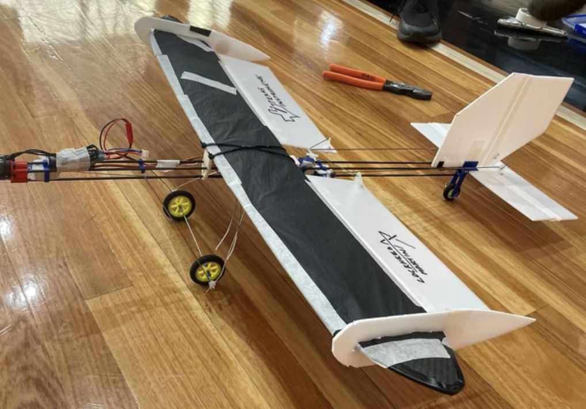
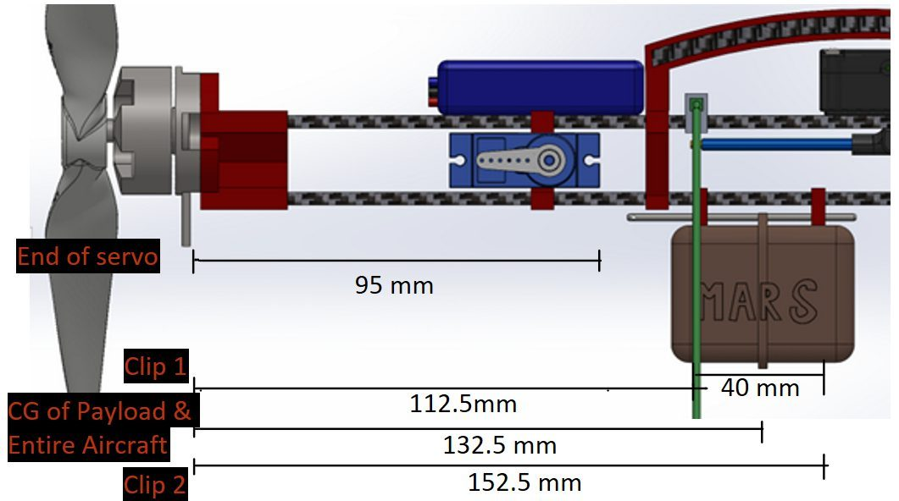
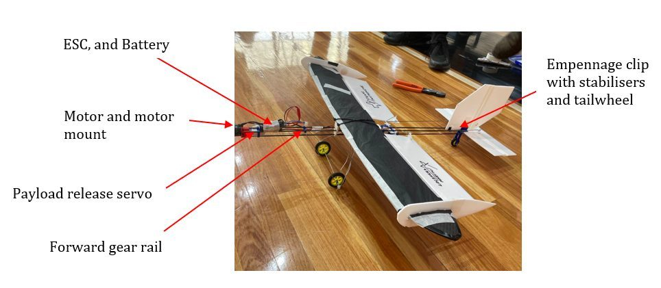
I was the group manager for a team of six. I allocated tasks, set the topic for each meeting and held the team to the deadlines in our Gantt charts from the PDR to the final report. I also led final assembly and owned the payload drop mechanism, along with its interface and ground tests. The first release ran fishing line from the servo, and its slack made the drop unreliable, so I replaced it with an aluminium wire bent directly into the servo. This removed a part and followed DFMA principles. During interface testing, the bare elastic band holding the payload gripped the release wire. Having tied back my own long hair for years, I swapped it for a fabric-covered hair tie, which held the same tension without the friction. When a payload clip was lost before the final flight, the payload was moved under the remaining clip at the centre of gravity, and the CG test was repeated to confirm it had not moved.
The drop mechanism was the simplest subsystem on the aircraft, yet it changed three times. Each change came from testing rather than from the original drawing. An interface that works on the bench can still fail once it is on the aircraft, so verification has to be repeated whenever the configuration changes. Keeping six people to one timeline was also challenging. The Gantt charts were what kept every milestone visible to the whole group. Overall, this was the first project where I saw the systems engineering V followed through, with requirements set from the top down and verified from the bottom up.
Analyse a single-cell stiffened wing box under 20 kN·m bending, 28 kN shear and 5 kN·m torsion, then redesign it from a fixed catalogue of skin gauges, stringers and spar caps so that every margin of safety is positive, with the outer geometry unchanged.
| Quantity | Baseline | Redesign |
|---|---|---|
| Structural mass | 8.98 kg | 5.90 kg (−34 %) |
| MS, bending | +1.30 | +0.62 |
| MS, shear | +0.31 | +0.16 |
| MS, upper-skin buckling | −0.88 | +0.15 |
This was an individual assignment, so I built the whole analysis as a spreadsheet tool. A stiffener-only idealisation gave the centroid and second moments of area. These were then refined into a boom model that included the effective panel areas. From that model I calculated the bending stresses, the closed-section shear flows and the compression buckling stress of the upper skin. Every stage was checked against independent force, moment and torque equilibrium. The baseline passed in bending and shear but failed in upper-skin buckling, with a margin of −0.88 on the 288 mm wide panel. Buckling stress scales with the square of thickness over width, so the redesign targeted panel width first. Three vertically aligned stringer pairs were added and the upper skin was thickened to 2.0 mm. The lower skin, spar caps and stringers were then reduced to lighter catalogue sizes while every margin stayed positive.
The lightest layout I found was not the one I selected. A 5.78 kg configuration kept every margin positive, but its shear margin was only 0.04. I chose the 5.90 kg layout instead, with a shear margin of 0.16. A margin that is barely positive on paper leaves no room for the assumptions behind the idealisation. This taught me that a design study is a trade between mass and robustness, rather than a search for the minimum. I also learnt to let the governing failure mode drive the design. Once buckling was identified as the critical case, most of the redesign followed from it.
Design and build a wing box from 1 mm aluminium sheet that carries the highest load for the least weight. The skins were fixed at 250 mm × 100 mm and the height was free, with each beam bent from another sheet of the same size. The finished box was then tested to failure in three-point bending.
| Quantity | Predicted | Tested |
|---|---|---|
| Peak load | 4188 N | 5852 N |
| Load per gram | 12.2 N/g | 17.1 N/g |
| Mass | 334 g (CAD) | 342 g |
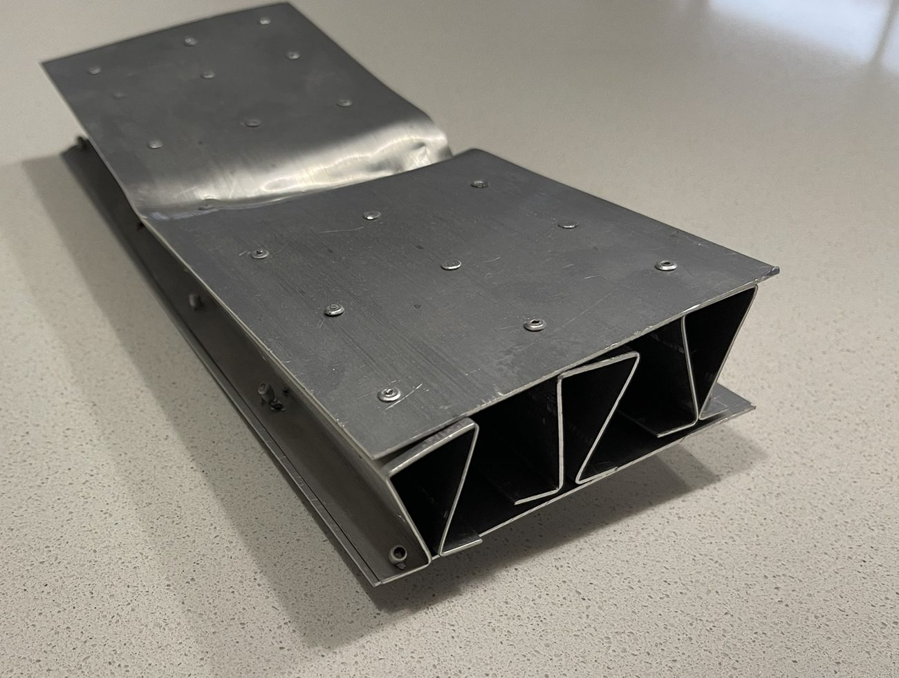
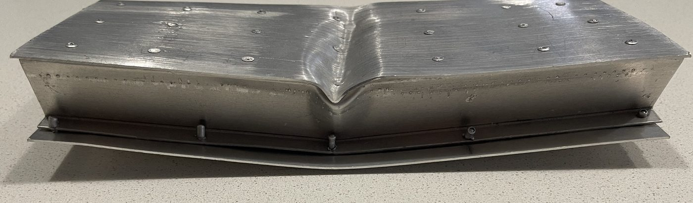
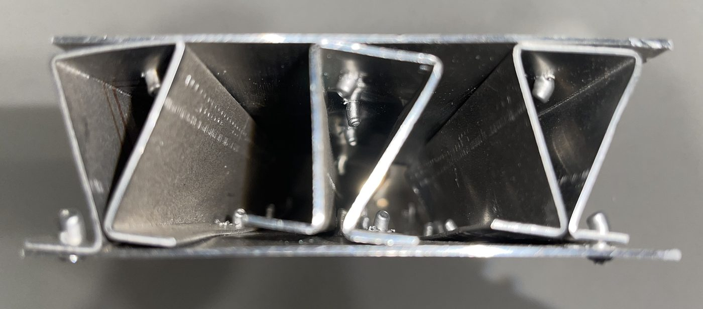
This was a group of four, and I did most of the physical manufacturing. That meant bending the beams on the sheet metal brake, closing them in a vice, then drilling and riveting them between the two skins. I also wrote the largest share of the report (33%), covering most of the methodology and the design optimisation. We first ran tensile tests on steel, aluminium and a polymer, and aluminium was chosen for its strength to weight ratio. Hat and omega beam profiles were then bent from sheet and compared in a three-point bend test. My optimisation section set out how the group narrowed four candidate layouts down to three cardboard prototypes, and then to the final design of three omega beams, one at each edge and one in the centre.
Our hand calculation predicted a failure load of 4188 N, while the box carried 5852 N, about 40% more. At the time we put the gap down to the generic 90 MPa yield stress we had used for aluminium and to the load possibly sitting off centre. However, the calculation only checked bending stress against yield. The box actually failed when the top skin buckled under the loading point, a mode the calculation did not model, as our report acknowledged. This was my first lesson that a stress check on its own is not a failure prediction, and it is why my later wing box study (Sheet 2) treats buckling as its own margin of safety. I also learnt how much manufacturing limits shape a design. The brake only bent to 90°, so the omega beams could never fully close, and the rivet layout was set from what the single-beam test showed.
Modify a supplied aluminium wing rib so that it deflects no more than 0.10 mm under load, weighs no more than 50 g and keeps a safety factor of at least 5.0.
| Requirement | Target | Baseline | Final |
|---|---|---|---|
| Max. deformation | ≤ 0.10 mm | 0.311 mm | 0.0922 mm |
| Mass | ≤ 50 g | 29.7 g | 21.83 g |
| Min. safety factor | ≥ 5.0 | 6.2 | 9.48 |
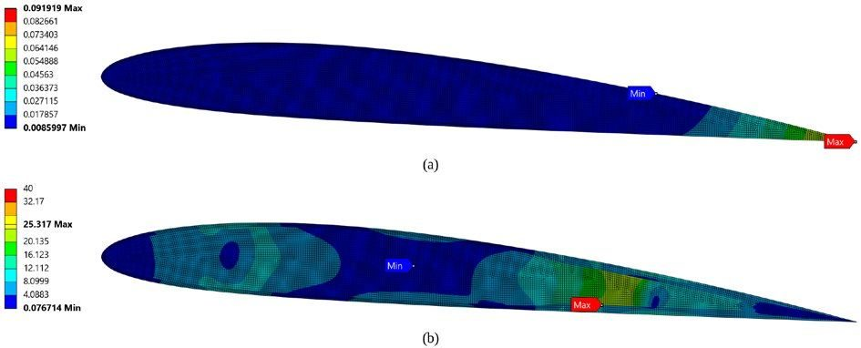
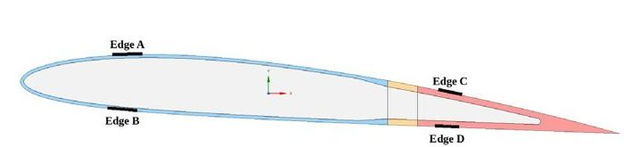
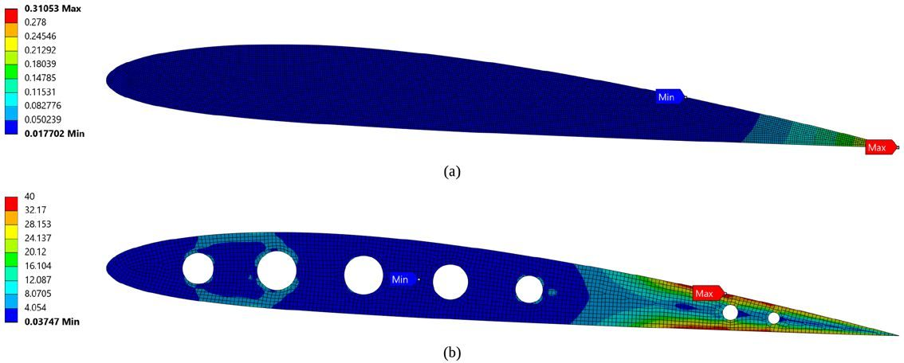
Our group of three split the assessment between a lateral spar and a wing rib, and the rib was mine. I modelled it in ANSYS Workbench as a two-dimensional plane stress problem. A mesh study was run at 4, 2, 1 and 0.5 mm, and deformation converged with a grid convergence index of 0.25 %. The supplied 4.0 mm plate met the mass and strength targets but deflected 0.311 mm, three times the limit. The rib was a stiffness problem. Two obvious fixes were tested and rejected. A uniform 6.72 mm plate used the whole 50 g budget and still deflected 0.184 mm. Seven lightening holes saved 3.57 g but made the rib slightly less stiff. The final design treats the tail as a tapered beam, with a 1.0 mm web inside a rim that thickens from 4.0 to 8.0 to 18.0 mm towards the trailing edge. This raised the second moment of area at the rear spar from 449 to 1534 mm⁴. Narrowing the lightly stressed forward rim then saved a further 1.83 g.
Adding material is the least efficient way to add stiffness. The rib only met its deflection limit once the material was moved to where it carries bending, which is why aircraft ribs are built as caps and a thin web. The final design is 26.6 % lighter than the supplied plate and 3.4 times stiffer. I also learnt to separate physical stress peaks from numerical ones. Deformation changed by less than 0.4 % between meshes. However, the peak at the end of each support kept rising with every refinement, so it could not be treated as a real stress. The safety factor of 9.48 is based on the 25.3 MPa peak instead, which sits on a genuine shear band in the web.
Visualise the shock and expansion waves around a sphere, a rod and a cone in a miniature supersonic wind tunnel, then use the images to estimate the flow conditions.
| Quantity | Method | Value |
|---|---|---|
| Cone semi-vertex angle | Measured from image | 22.8° |
| Shock-wave angle | Measured from image | 53° |
| Freestream Mach number | Conical flow chart | 1.48 |
| Nozzle throat area | Area-Mach relation | 45.17 mm² |
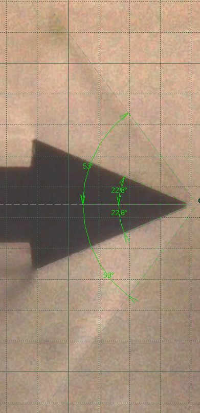
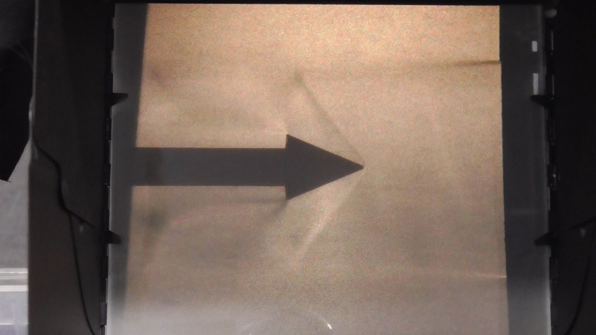
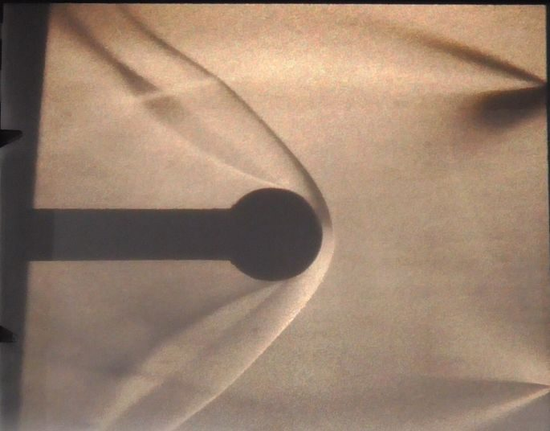
Schlieren imaging shows density gradients in the flow without placing a probe in it. This matters at supersonic speeds, because any probe generates shocks of its own. While the group shared the testing, I analysed the cone case. The semi-vertex angle and the shock-wave angle were measured from the schlieren image as 22.8° and 53°. On the conical flow chart, the two angles intersected between the Mach 1.45 and 1.50 lines. Interpolation gave a freestream Mach number of 1.48. I then used the area-Mach relation, with γ = 1.405 and the 52.5 mm² nozzle exit area, to back-calculate the throat area as 45.17 mm².
This lab connected compressible flow theory to something I could see. The bow shock standing off the sphere and the attached shock on the cone matched what the theory predicts for blunt and sharp bodies. It also showed how much an optical method depends on careful reading. The Mach number came from two angles measured by hand and an interpolation between chart lines. A small misreading of either angle moves the result significantly. Overall, I now treat any value read from an image as a measurement with its own uncertainty.